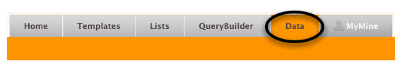
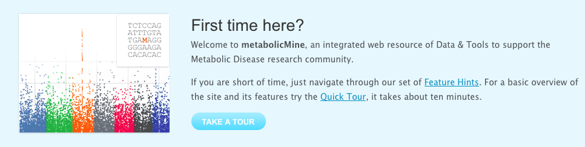
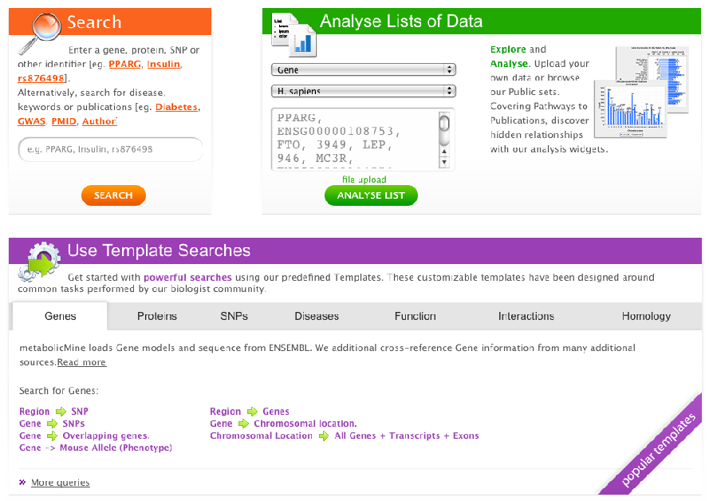
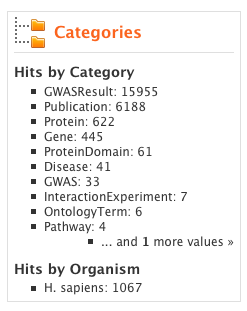

metabolicMine is a data warehouse that integrates diverse biological data sets and the tools to explore them. The main focus of metabolicMine is genomics and proteomics of common metabolic diseases. By integrating such data into one place it is possible to construct searches across domains of biological knowledge.
See a List of all the data sources from the toolbar on any metabolicMine page:
The metabolicMine user interface is designed to go beyond simply looking up an identifier and viewing a report page. This quick tour will introduce some of the features:
The first thing you'll see is the First Time Here box.
Here's where you'll find our handy Feature Hints. Scroll through when you need a quick reminder of the different parts of metabolicMine and what everything does. Don't worry - you can minimize the box when you're done with it.
Moving down the page we encounter three colour-coded boxes showing the main ways of interacting with the database. On the left (in orange) we have the Search box, on the right (in green) the Lists and below (in purple) our predefined Template searches.
To Search, simply type in an identifier to see a report page. You can search with identifiers (Gene symbols, accession codes, PubMed IDs etc.) or keywords (eg. Diabetes) and Authors (eg. Sanger F). Additionally, you can use Boolean (AND, OR, NOT) and wildcards (*) to refine your results.
Filtering your search
Our search engine operates across all data fields giving you the highest chance
of getting a result. Filters show you the different places where your
search words were found (eg. Gene, Protein, Go Term, Template search), allowing you to easily find the type of results that are most important to you. Certain filters (for example Gene or Protein) also allow you to save a List straight from your results. There's more about Lists later.

The Lists area lets you operate on whole sets of data at once. You can upload your own Lists (favourite Genes, SNPs etc) or save them from results tables. We also create useful Public Lists for everyone to use. You can start to explore your data on the List Analysis Page. Here are just some of the things you can do:
- Ask questions about the data using our predefined Template Searches
- Combine or subtract the content of other Lists
- Uncover hidden relationships with our analysis Widgets
You're automatically taken to the List Analysis Page when you first create a List or when you visit a List that you've stored previously.
Template Searches are 'predefined' searches that are designed around specific tasks. Template searches provide you with a simple form that lets you define your starting point and optional filters to help focus your search. Our Template Searches are designed around the common tasks performed by our Biologist Community. They cover common questions like:
- I have a List of SNPs - do any of them affect Genes?
- This Gene came up in my results - what can I find out about it?
- I'm interested in this chromosome region - what's in there that could be linked with this disease?
You can create your own Template searches after you create a MyMine account and log in. You can modify our pre-existing Template searches or start from scratch with the QueryBuilder. Alternatively, the metabolicMine Team are search specialists so we can quickly build Custom Template searches for you.
The Powerhouse of metabolicMine, QueryBuilder (QB) allows you to construct your own custom queries, modify your previous queries and Edit Templates. The easiest way to get started with QB is by editing one of our pre-existing Template Searches. Follow the simple tutorial in the QueryBuilder section to change a Template search output or add a filter.
MyMine is your personal space on metabolicMine. Creating an account allows you to save your Queries, Lists and Template searches you've modified for later use. You can also mark the most useful Public Template searches as favourites so they're easier to find.
All these features are accessible from the Tab toolbar on every metabolicMine page: